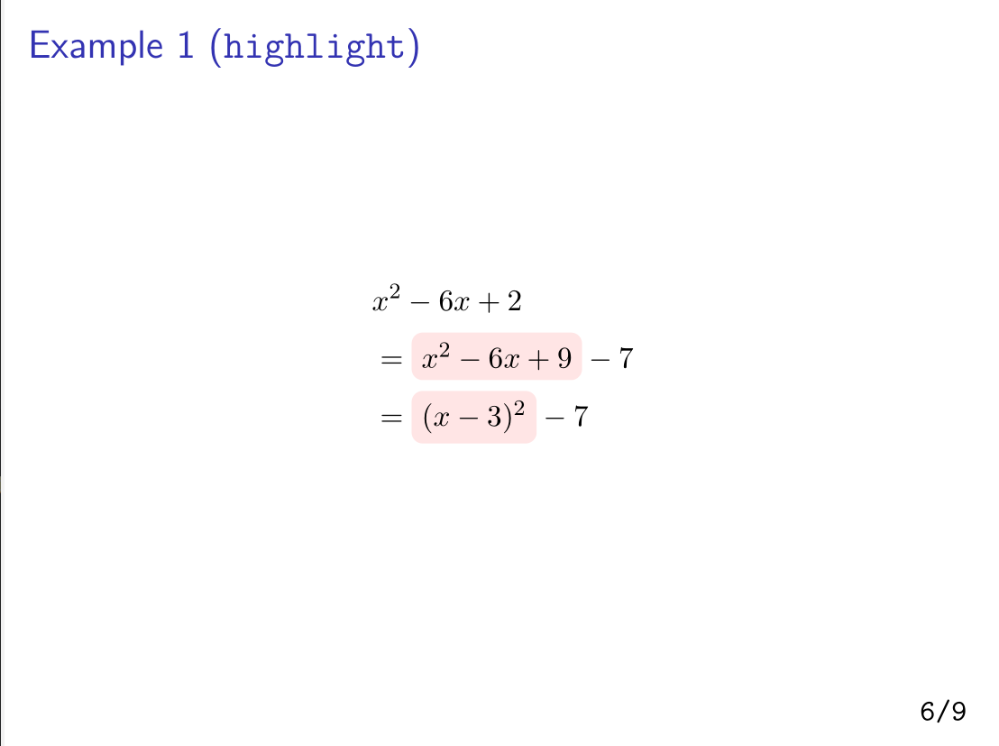

Beamer Template
数式の多いスライドを作りやすくするBeamerテンプレート
About
- 研究室内の輪講用に作成したBeamerのテンプレート
- 数式の意味を説明するためのアニメーションを直感的に記述できるLaTeXコマンド
highlightcapを実装 - Overleafで動作確認済み
Link
- Repository: https://github.com/eqs/beamer-math-template
- Speaker Deck: https://speakerdeck.com/eqs/beamer-example
Detail
テンプレートを作ったモチベーション
- PRMLのような数式がかなり多いテキストの輪講では，Power Pointで資料を作るのが超面倒くさい
- Keynoteもインライン数式が書けないので結構だるい
- 一方，Beamerだとレイアウトの自由度が下がるため，視覚的にわかりやすいスライドを書くのが面倒くさい
- 数式を記述しやすいLaTeXを使用しつつ最小限の手間で説明用のアニメーションを付与できるコマンドが欲しくてこのようなテンプレを作った
highlight系コマンドの使い方
例えば，方程式の変形の説明において，一部の項にだけ赤色の背景をつけたい場合は 次のように記述すればよい：
\begin{align*}
&x^2 - 6x + 2 \\
&= \highlight[red]{x^2 - 6x + 9} - 7 \\
&= \highlight[red]{(x - 3)^2} - 7
\end{align*}
実行結果は次のようになる：

装飾無しの数式を一旦見せてから次のアニメーションで背景をつけたい場合は以下のように
<2-> をつければよい．
\begin{align*}
&x^2 - 6x + 2 \\
&= \highlight<2->[red]{x^2 - 6x + 9} - 7 \\
&= \highlight<2->[red]{(x - 3)^2} - 7
\end{align*}
このような<>を用いる記法は Overlay Specification と呼ばれる．
これについては以下のページの解説がかなりわかりやすい．
Beamer — Tasuku Soma’s webpage
自分が作成した highlight 系のコマンドは全て Overlay Specification に対応しており，
Beamerユーザにとって直感的に使いやすくなっている．
highlight系コマンドの実装
数式に背景色をつけたり，周りにテキストを付与するのにTikZと呼ばれる描画パッケージを使用している．
Overlay Specification に対応したLaTeXコマンドを定義するには \newcommand<> を利用すればよい．
例えば，\highlight の定義は次のようになっている：
\newcommand<>{\highlight}[2][red]{%
\alt#3{%
\tikz[baseline=(x.base)]{
\node[rectangle,rounded corners,fill=#1!10](x){$#2$};
}%
}{%
#2
}%
}
このように記述すると，\highlight は3つの引数を受け取るコマンドとなり，
（引数の数は[2]になってるけど勝手に+1される）
一つ目が背景色，二つ目が背景をつけたいテキスト，
三つ目がOverlay Specificationとして解釈される．